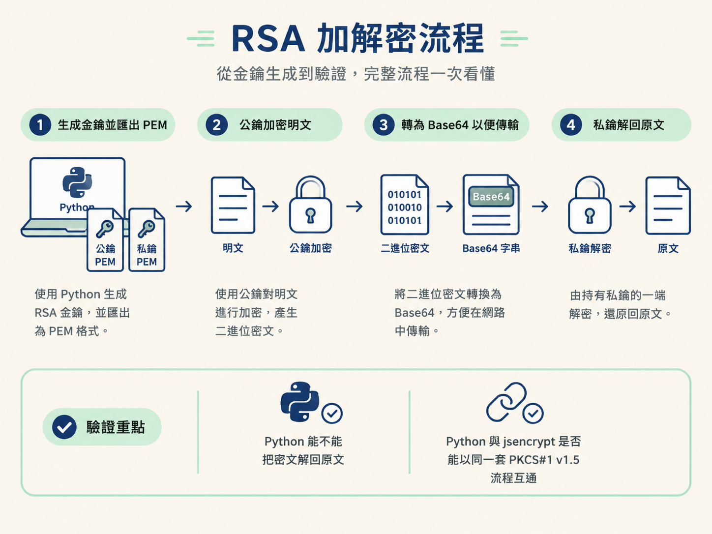
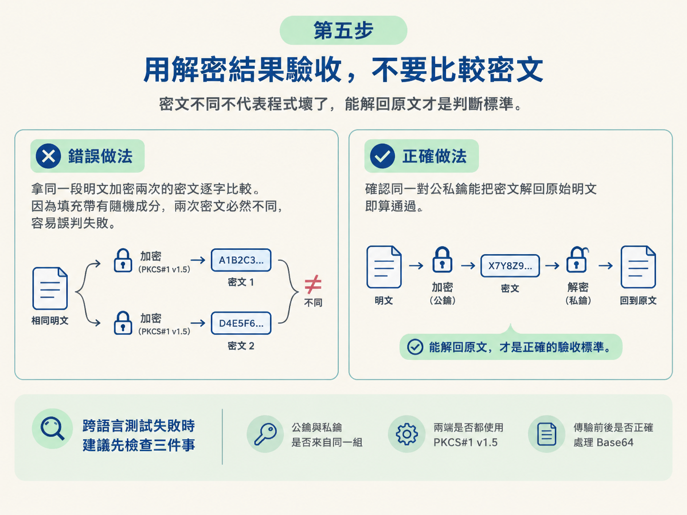

當你在 DevTools 裡找到一段公鑰 PEM，下一步不是繼續盯著它看，而是把站台的加密流程搬到本機重現。這一節會用 Python 跑完「生成金鑰 → 公鑰加密 → Base64 傳輸 → 私鑰解密」的完整流程，再對照 Node.js 裡的 jsencrypt 寫法。
做完之後，你應該能驗證兩件事：第一，Python 能不能把密文解回原文；第二，Python 與 jsencrypt 是否能使用同一套 PKCS#1 v1.5 流程互通。這適合用來測試從站台取得的 RSA 公鑰與加密邏輯；如果你只是想確認密文每次是否相同，這套驗證方式就不適用，因為填充中的隨機成分會讓結果改變。

pip install pycryptodome -i https://pypi.tuna.tsinghua.edu.cn/simple/。npm install jsencrypt 安裝。window 與 self 指向 globalThis，否則套件可能無法正常載入。-----BEGIN ...----- 與 -----END ...----- 之間的文字格式。如果手上還沒有可用的測試金鑰，可以先用 Python 現場生成一組。執行下面的程式後，目錄中會出現公鑰檔 rsa.public.pem 與私鑰檔 rsa.private.pem。
from Crypto.PublicKey import RSA
# 通过相关算法生成唯一秘钥
rsakey = RSA.generate(1024)
#将秘钥保存到文件中
with open("rsa.public.pem", mode="wb") as f:
f.write(rsakey.publickey().exportKey())
with open("rsa.private.pem", mode="wb") as f:
f.write(rsakey.exportKey())先看核心的三個動作：
RSA.generate(1024) 生成一整組 RSA 金鑰。參數代表金鑰位元數；數字越大，安全性越高，但運算也會更慢。這裡的 1024 位元只用於練習。rsakey.publickey().exportKey() 取出公鑰並匯出；rsakey.exportKey() 則匯出私鑰。exportKey() 回傳位元組，因此檔案必須用 mode="wb" 寫入。若改用純文字模式，寫檔時會出錯。這一步完成後，先確認兩個 PEM 檔都已建立。公鑰接下來交給加密端，私鑰則留給解密端，就像一個只能上鎖、另一個負責開鎖。
接著讀取公鑰 PEM，建立採用 PKCS#1 v1.5 填充的加密器。RSA 加密後得到的是二進位資料，所以還要再轉成 Base64，才能方便地放進 JSON、表單或其他文字傳輸格式。
from Crypto.PublicKey import RSA
from Crypto.Cipher import PKCS1_v1_5
import base64
# 加密
data = "我喜欢你"
with open("rsa.public.pem", mode="r") as f:
pk = f.read()
rsa_pk = RSA.importKey(pk)
#基于公钥创建加密对象
rsa = PKCS1_v1_5.new(rsa_pk)
result = rsa.encrypt(data.encode("utf-8"))
# 处理成b64方便传输
b64_result = base64.b64encode(result).decode("utf-8")
print(b64_result)這段程式可以依執行順序拆成四步：
RSA.importKey(pk) 把讀進來的 PEM 文字還原成可操作的 RSA 金鑰物件。PKCS1_v1_5.new(rsa_pk) 使用公鑰建立 PKCS#1 v1.5 加密器。data.encode("utf-8") 先把明文轉成位元組，再交給 rsa.encrypt(...) 產生二進位密文。base64.b64encode(result).decode("utf-8") 把二進位密文包成可傳輸的文字。這裡讀取 PEM 時使用 mode="r"，因為 PEM 本身是文字。執行後，終端機會印出一段 Base64 字串；它就是準備送往解密端的密文。
解密時要反向處理：先把 Base64 還原成二進位密文，再載入私鑰並執行解密。下面的 data 是一段已經加密並轉成 Base64 的內容。
from Crypto.PublicKey import RSA
from Crypto.Cipher import PKCS1_v1_5
import base64
data = '17wJJtBBujJurHRu3teDC44jSllmqcB9a22U1DQ5/IsI0m3NuShPTxBq8pLTWRdszPapiXfjvOh47P9u5+7U4hvNZL+kKqs3H5m4BKKphORUUfqb9zTowoHb1mM9ji2LuMAYmc1l70ZR+s9XsV3HrHCV/S2FzGWngcWpNVtsTJg='
# 解密
with open("rsa.private.pem", mode="r") as f:
prikey = f.read()
rsa_pk = RSA.importKey(prikey)
#创建解密对象
rsa = PKCS1_v1_5.new(rsa_pk)
result = rsa.decrypt(base64.b64decode(data), None)
print("rsa解密数据:::", result.decode("utf-8"))RSA.importKey(prikey) 載入私鑰，PKCS1_v1_5.new(rsa_pk) 建立解密器。真正的反向處理發生在這一行：
rsa.decrypt(base64.b64decode(data), None)
base64.b64decode(data) 先拆掉 Base64 外包裝，還原二進位密文；decrypt(...) 再使用私鑰解密。第二個參數 None 是解密失敗時回傳的哨兵值，因此失敗不一定會直接拋出錯誤，也可能安靜地回傳 None。
解密成功後，result 仍是位元組。最後用 result.decode("utf-8") 轉回原本的文字。
Python 流程跑通後，再把同一個動作搬到 jsencrypt。以下程式使用私鑰，解開一段先前由公鑰加密的 Base64 密文。
//使用私钥解密
encrypted = 'cs5vAIOCBAMtiseOlXDLFJv+vG9n/is6sT3xcTRZG3qEob75Np9sxyCh9sidlq1DN+n1KBrbww1QjpU8un02GQ=='
var decrypt = new JSEncrypt();
decrypt.setPrivateKey(PRIVATE_KEY);//设置私钥
var uncrypted = decrypt.decrypt(encrypted);//解密
console.log(uncrypted);把它和 Python 版本並排看，角色會很清楚：
| 操作 | Python | jsencrypt |
|---|---|---|
| 建立加解密物件 | PKCS1_v1_5.new(...) |
new JSEncrypt() |
| 載入私鑰 | RSA.importKey(prikey) |
setPrivateKey(PRIVATE_KEY) |
| 解密 Base64 密文 | rsa.decrypt(base64.b64decode(data), None) |
decrypt(encrypted) |
| 取得結果 | 解碼後的明文 | uncrypted |
jsencrypt 內部同樣使用 PKCS#1 v1.5 填充，因此它能和這份 Python 程式互通。實際對接站台時，可以用這個方法檢查：Python 加密後交給 JavaScript 解密，或由 JavaScript 加密後交給 Python 解密。
完整流程跑完後，正確的驗收方式是確認私鑰能不能拿回原始字串，例如程式中的 我喜欢你。
不要用「兩次密文是否完全相同」判斷成功。PKCS#1 v1.5 的填充帶有隨機成分，因此同一段明文即使使用同一把公鑰加密兩次，產生的密文也不會一樣。密文不同不代表程式壞了；只要同一對公私鑰能把內容解回原文，流程就是通的。
若跨語言測試失敗，應優先檢查三件事：公鑰與私鑰是否來自同一組、兩端是否都使用 PKCS#1 v1.5，以及傳輸前後是否正確處理 Base64。

執行流程後，目錄中會有公鑰與私鑰 PEM。公鑰端依序執行
RSA.importKey、PKCS1_v1_5.new、encrypt與 Base64 編碼；私鑰端則先解開 Base64，再執行decrypt(..., None)。jsencrypt 使用setPrivateKey與decrypt完成相同工作。最後的判斷標準只有一個：能不能解回原文。不要拿每次產生的密文逐字比較。
到這裡，對稱與非對稱加密的兩條主線都已經實際跑過。下一步會處理另一個容易被誤認成 AES 的家族：中國國密 SM3／SM4。它會出現在特定類型的站台中；逆向時必須先辨認出來，才不會拿 AES 的參數硬套。